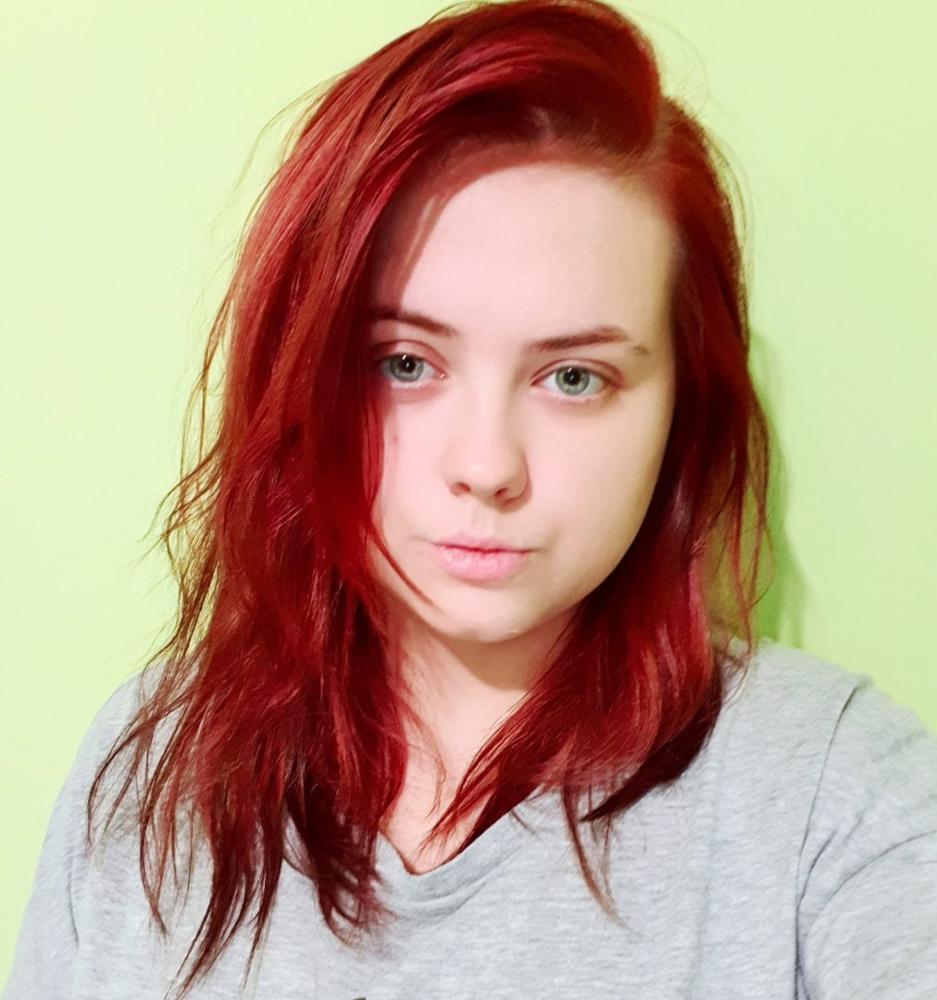

Kondrina Darya Alexandrovna
Avatar

Personal data
- 89876667688
- PochtaDasha@gmail.com
About me
I live in Moscow, I am a 4th year undergraduate student at the Russian Chemical Technology University D.I. Mendeleev at the Faculty of Natural Sciences. Now I am interested in web development and therefore I am looking for a remote job in this area.Before that, I worked temporarily in a veterinary clinic as an assistant to a veterinarian, this is a kind of hobby. I am also a little fond of medicine.
Hard skills
- working with surgical instruments
- performing various invasive and non-invasive procedures (for humans and animals)
- providing first aid to people (there is a certificate of completion of the course)
- interaction with chemicals, substances and laboratory facilities
- Basics HTML/CSS
Code examples
----
Work experience
- 8 months in a veterinary clinic.
- Assisted in surgeries, ultrasound / X-ray, at the therapist, performed various procedures (injections, infusion therapy, treatment and stitching of wounds, etc.), worked in a day hospital, prepared equipment (and animals) for operations. She also performed the functions of an administrator and kept records of medicines.
- 3 months technical copywriter.
- Created pages with information about products (gas chromatographs and their components) based on English-language official sources from the equipment manufacturer.
- Web Development.
- No experience in Web Development.
Education
Incomplete higher education. Undergraduate Russian Chemical Technology University D.I. Mendeleev at the Faculty of Natural Sciences.
English language
Entry level A1